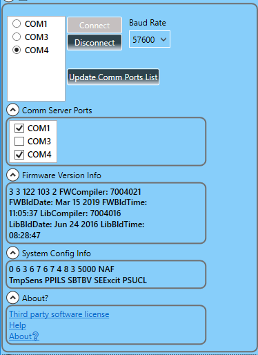
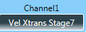
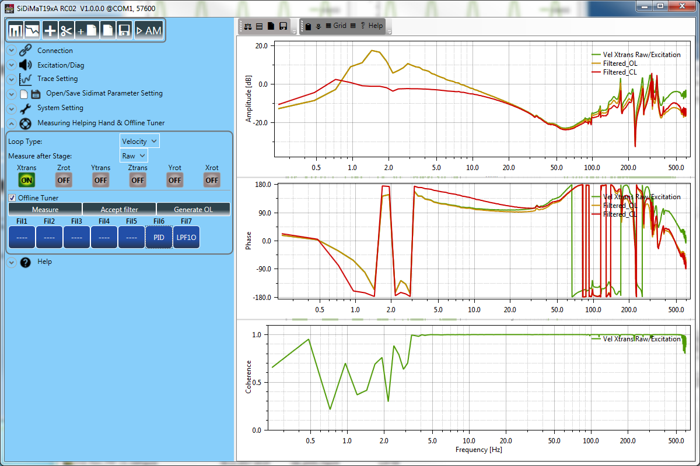

Integraded Dynamics Engineering Integraded Dynamics Engineering |
| SiDiMaT19xA User Manual |
| SiDiMaT19xA |
| AUTHOR(S): | Moneer Shatat-Herres |
| REVISION: | 00 |
| DATE OF PRINT: | December 12, 2017 |
DOCUMENT CHANGE & HISTORY RECORD
| Name | Last Update | Status | Version | ECR/PR/IP | Comment |
|---|---|---|---|---|---|
| MSHAT | 12.12.2017 | Released | 00 | Modification related to SiDiMaT19xA RC02 1.0.0.0 | |
Notice!
| Although this document has been prepared with the utmost care, errors of any kind cannot be totally discounted. The contents of this document may be periodically revised, amended or changed otherwise by the originator without notice. You are invited to report any deficiencies / recommendations to IDE. |
Windows 7 ®, Windows 8 ® are registered trademarks of the Microsoft Corporation, USA.
© Copyright 2017, Integrated Dynamics Engineering GmbH
Introduction
The SiDiMaT19xA tool has been built to visualize the IDE-Opticon controller signals supported by the opticon firmware. Furthermore SiDiMaT19xA allows to start an auto measurement containing of my SiDiMaT19xAa measurements.
Remark: SiDiMaT19xA is not compatible for controller with a running firmware version older than 3.3.xx.
Language
This manual is originally written in English language.
Document
This document describes how to use the SiDiMaT19xA tool for the opticon controller. It services to display nearly all opticon firmware I/O-Signals. Furthermore it allows auto measuring using an auto-measurement file.
Intended Audience
The software and this document is intended for users of an IDE vibration isolation system.
Requirements
In order to run this software, the following requirements must be met:
- Windows 7®, Windows 8®, or later version.
- Personal computer with x86- or x64-based microprocessor 2.8 GHz or higher and 4GB RAM or higher are recommended.
- SVGA-resolution with a minimum of 1600x900 pixel and 16-Bits high colors.
- Mouse or compatible pointing device
- Microsoft .Net Frame work 4.5.2 or higher.
Contact
Integrated Dynamics Engineering GmbH Hermannstrasse 9-13 65479 Raunheim, GERMANY Phone: +49 (0)6142 9400-0
INSTALLATION
Copy the installation package from the CD to your PC. Read the SAMBA19x Installation Guide document.
Getting Started
Your PC can communicate with the opticon controller with a USB connection or serial (RS232) connection. Use an A/B USB cable or a null modem cable.
Make sure that the FTDI USB-To-Serial converter driver is installed.
Start the SiDiMaT19xA program with a double click on the SiDiMaT19xA desktop shortcut. Alternative you could start it from the window start menu.
Start-Up
After the start of the program choose the connection device and confirm it with the “Connect” button.
To talk to the controller SiDiMaT19xA uses the communication server like the other SAMBA software package tools.
Note
Ensure that the selected com port number is configured by the “Communication Server Configuration Tool”. Otherwise the connection will not be established.

Figure 3.1.1: Communication Server Configuration Tool
Note
If you connect via the USB port, the port will be shown as an additional com port (Virtual Com Port).
Figure 3.1.2: Connection with a controller.
Description
The new SiDiMaT19xA tools basically consists of two main panels “Control panel and Graphs panel”. The control panel contains settings and the graphs panel displays the plots of the measured signal. (See figure 4.1.1)
Control Panel
The control panel contains on the top a control buttons and a few setting tabs “Connection, Graphs, Excitation, Trace Setting …etc”.
Figure 4.1.1: Control Panel Overview.
Control Buttons Bar
The control buttons bar consists of a few buttons to switch the between time and frequency response plots and to save, cache, open, save and add sidimat19xa measurement.
| Control Item | Description |
|---|---|
| Toggles to the time/spectrum plot view. | |
| Toggles to the frequency response plot view. | |
| Caches the current sidimat19x measurement. | |
| Deletes the last cached sidimat19x measurement. | |
| Adds a sidimat19x measurement to the current one. | |
| Opens a sidimat19x measurement. | |
| Saves the current sidimat19x measurement. | |
| Opens an auto measurement file and executes it. |
Table 4.1.1: Control buttons bar
Connection Tab
The “Connection” tab allows you to connect or disconnect to a controller.
Figure 4.1.2: Connection tab.
Com Server Ports shows the selected com ports could be used to talk to controller. Firmware Version Info contains the Firmware version info. System Config Info contains system respectevily firmware global parameter and features. About? contains info about third party software license, a link to open the gui user manual "Help" and GUI-Software info "About?".
Use “Connect” button to establish the connection with the controller. Use “Disconnect” button to disconnect the communication. Use “Terminate Comm Server and Connect” button to close the Comm Server session, if one is already started and to connect with a new session. This option is recommended after a communication trouble. Use “Update Comm Ports list” button to refresh lists of the available com ports.

Figure 4.1.3: Connect Page after a successful connection with controller.
Excitation/Diag Tab
Using the excitation tab the noise injection point, the excitation setting “type and parameters” and the excitation filter settings and usage could be adjusted.
Figure 4.1.5: Excitation/Diag Tab.
| Control Item | Description |
|---|---|
| Click “Accept Change” button to accept the modification of the excitation setting and to send it to the controller. | |
| Specifies the excitation signal type. | |
| Toggles the noise filter usage On/Off and specifies the excitation filters. | |
| Specifies the injection node “signal” of the excitation signal. |
Table 4.1.2: Excitation Tab Control Items.
| Excitation Type | Parameters |
|---|---|
| White Noise |
|
| Sine Wave |
|
| Duty Cycle |
|
| Chirp Sine “recursive” |
|
Table 4.1.3: Excitation Types and their Parameters.
Trace Setting Tab
The trace setting tab allows to configure all the trace parameter.
| Control Item | Description |
|---|---|
| Click “Channel0” button to select the first signal to be traced. | |
|  | Click “Channel1” button to select the second signal to be traced. |
| Specifies the trace length. | |
| Specifies under sampling rate. | |
| Toggles the usage of the Anti-Aliasing filter On/Off. | |
| Specifies the average number of the measurement. Starts/Stops the measurement. | |
| This option appears only for firmware with fast data acquiring support. Enables this option to accelerate the trace data acquiring. |
Table 4.1.4: Trace Setting Tab Control Item.
Figure 4.1.6: Trace Setting Tab.
Figure 4.1.7: Trace Setting Tab with fast Data Load Support.
Open/Save Sidimat Parameter Setting Tab
| Control Item | Description |
|---|---|
| Click to load sidimat parameters from a sidimat configuration file “SiDiMaT19xAConfig”. | |
| Click to save the actual sidimat parameters to a sidimat configuration file “SiDiMaT19xAConfig”. |
Table 4.1.6: Save/Load Sidimat Parameter Setting Control Items.
Figure 4.1.9: Save/Load Sidimat Parameter Setting Tab.
System Setting
Figure 4.1.10: System Setting Tab.
Measuring Helping Hand
The measuring helping hand is a useful feature. It supports the user by measuring the axis of the control loop of the opticon firmware.
| Control Item | Description |
|---|---|
| Specifies the loop types of the axis which will be measured. | |
| Specifies after which stage “filter” the axis will be measured. | |
| Specifies the axis which will be measured. |
Table 4.1.7: Measuring Helping Hand Control Items.

Figure 4.1.11: Measuring Helping Hand Tab.
Offline Tuner
The offline tuner gives the possibility to measure a FB-Loop axis raw input, to change its filters and to simulate its closed loop.
When the user is satisfied with the result the adjusted filters setting could be accepted for the corresponding axis.
Attention: The offline tuner is modelling the close-loop mathematically. By unsuitable filter setting (e.g. too high magnification) it has a wrong result. Be care full before accepting the filter setting. The offline tuner should only be used from trained persons.

Figure 4.1.12: Offline Tuner.
| Control Item | Description |
|---|---|
 |
Activates the offline tuner. |
 |
Measures the selected axis. |
 |
Sends the filters setting of the selected axis to the controller. |
 |
Generates open loop for testing purposes. |
 |
Changes the filter setting of the selected axis. |
Table 4.1.8: Offline Tuner Control Items.
Auto Tuning Procedure
Follow the next step for to tune an FB-Loop axis offline:
- Measure the frequency response of the axis raw input (transfer function of the unfiltered axis).

- Activate the Offline Tuner check box. The filters of the measured axis will be loaded from the controller and the filtered and close-loop frequency response will be generated and displayed.
The user could then change the filter setting and observe the result of the simulated close-loop until the desired result is reached.


- The found filters setting could be accepted and sent to controller by clicking the “Accept Filters” button.
Help

Figure 4.1.12: Help Tab.
Graphs Panel
There are three different graphs types which could be displayed in the graphs panel.
The graph which will be displayed is adjustable by the graphs tab on the control panel.
Time/Spectrum Graph
Click time/spectrum button  to display the time/spectrum graph.
to display the time/spectrum graph.
The time/spectrum graph consist of 4 plots. The two plots at the left side are showing the time signals of the measured “trace” signals. The two plots at the right display the spectrum of the measured signals.
Figure 4.2.1: Time/Spectrum Graph.
FRF/Phase/Coherence Graph
Click frf/phase/coherence button  to display the frf/phase/coherence graph.
to display the frf/phase/coherence graph.
The frf/phase/coherence graph consists of 3 plots.
The first one displays the transfer function “frequency response function” of the second trace signal above the first trace signal.
The second plot displays the phase the frequency response.
The third one shows the coherence of the two measured “trace” signal.

Figure 4.2.2: FRF/Phase/Coherence Graph. Graphs Panel Toolbar menu
Measurement mat files structure
All sidimat measurement (*.sidimat19x, *.idefigure) will be saved in matlab format.
.idefigure matlab structure Description
IDEFigure consist of MxN Graph-Matrix (Plot-Matrix, Model-Matrix) where M is the RowNumber and N is the ColumnNumber of the iDEFigure.
Graph-Matrix Structure by 3x3 Graph-Matrix:
| Model0 | Model1 | Model2 |
| Model3 | Model4 | Model5 |
| Model6 | Model7 | Model8 |
xx=load("xrot_raw_frf_ol_m.idefigure")
xx = //IDEFigure structure
scalar structure containing the fields:
MeasurementType = IdeFigure //this is the measurement type
Version = 1 // IDEFigure Structure version
FigureTitle = //this is title of the figure
FigureTitleFontSize = 14 //font size of the figure title
RowNumber = 3 //Row numbers in figure
ColumnNumber = 1 //column number in figure, the graph number
Model0 = // Graph-Structure, first graph in the 3x1 Graph-Matrix
scalar structure containing the fields:
Version = 1 // Graph structure Version
Title = //Title of the Graph
LogX = 1 //Logarithmic x-axis (1: logarithmic, 0:linear)
LogY = 0 //Logarithmic x-axis (1: logarithmic, 0:linear)
Grid = on //Grid status (on,off)
Legend = 1 //Legend status (0,1)
Xaxis = //x-axis structure
scalar structure containing the fields:
Version: 1x1 scalar //Version of the axis structure
Title: 0x0 sq_string //Label of the x-axis
TitleFontSize: 1x1 scalar //title font size
Prop: 1x4 matrix //Axis Scale Properties containing Scale {min max minorstep majorstep}
Yaxis = //Y-axis structure (see x-axis)
scalar structure containing the fields:
Version: 1x1 scalar
Title: 1x14 sq_string
TitleFontSize: 1x1 scalar
Prop: 1x4 matrix
Annotations = //Annotation structure
scalar structure containing the fields:
Version: 1x1 scalar // Annotations structure Version
Annotation0: 1x1 scalar struct //Annotation structure
Annotation1: 1x1 scalar struct //Annotation structure
Annotation2: 1x1 scalar struct //Annotation structure
Series = //Series “Curves” structure
scalar structure containing the fields:
Serie1: 1x1 scalar struct //Serie “Curve” structure
Model1 =
Table 5.1.1: IDEFigure matlab structure.
>> xx.Model0.Series.Serie1
ans =
scalar structure containing the fields:
Title = Vel Xrot Raw/Excitation //Serie Title
Serie = //2 dimensional array containing the (x,y) pairs.
Columns 1 through 9:
0.00000 0.24000 0.48000 0.72000 0.96000 1.20000 1.44000 1.68000 1.92000
-47.01777 -19.74275 -27.61559 -13.96998 -4.44243 -1.02031 -1.81286 -3.54399 4.22259
Columns 10 through 18:
2.16000 2.40000 2.64000 2.88000 3.12000 3.36000 3.60000 3.84000 4.08000
8.07258 16.54702 19.15587 19.87028 20.90579 21.40222 22.44204 20.61854 17.68427
Columns 19 through 27:
4.32000 4.56000 4.80000 5.04000 5.28000 5.52000 5.76000 6.00000 6.24000
15.69454 14.56121 13.44503 12.86091 12.07755 11.50960 10.28915 9.97069 9.78908
Columns 28 through 36:
6.48000 6.72000 6.96000 7.20000 7.44000 7.68000 7.92000 8.16000 8.40000
8.78665 8.44608 8.06616 7.70098 7.56921 7.34422 6.54481 6.27385 5.96678
Table 5.1.2: Serie matlab structure.
>> xx.Model0.Annotations
ans =
scalar structure containing the fields:
Version = 1 //Structure Version
Annotation0 =
scalar structure containing the fields:
Type = Point //Annotation type
Position = //Annotation Position in graph
3.6000 22.4420
//Annotation Text to display
Text = X:3.6
Y:22.442
Table 5.1.3: Annotation matlab Structure.
.sidimat19x matlab structure Description
IDEFigure consists of one or more of opticon trace data “RawDat**x**”.
>> xx=load("xrot_stage7_ocl.sidimat19x")
xx =
scalar structure containing the fields:
MeasurementType = SiDiMat19x
Version = 1
RawDat1 =
scalar structure containing the fields:
Version = 1 //Structure version
SampleRate = 6000 //controller sample rate during tracing
UnderSample = 5 //trace under sample number
SampleNumber = 5000 // traced data number
AverageNumber = 4 // trace averages
SignalName = //Trace signals name
scalar structure containing the fields:
Sig0: 1x12 sq_string
Sig1: 1x15 sq_string
DataSet = //Trace data array 2x(sampleNumber*AverageNumber)-array. This array contains the traced data of the two trace signals.
Columns 1 through 8:
-2.7344e+003 -2.9265e+003 -2.6285e+003 -2.6919e+003 -2.8300e+003 -2.6299e+003 -2.6821e+003 -2.4236e+003
-2.7434e+003 -2.7056e+003 -2.6472e+003 -2.6658e+003 -2.6704e+003 -2.6295e+003 -2.6498e+003 -2.6562e+003
Columns 9 through 16:
-2.0755e+003 -2.4358e+003 -2.8244e+003 -2.5403e+003 -2.3636e+003 -2.9963e+003 -2.9254e+003 -2.5269e+003
-2.6239e+003 -2.6445e+003 -2.6592e+003 -2.6326e+003 -2.5962e+003 -2.6090e+003 -2.5843e+003 -2.5773e+003
Columns 17 through 24:
Table 5.2.1: .sidimat19x matlab structure.
Troubleshooting
Can’t run SiDiMaT19xA
Ensure that the .Net framework 4.5.2 or higher is installed.
Run the SiDiMaT19xA as administrator.
No Communication.
Check if the controller is powered on and the monitor LED is blinking.
Check if either a USB cable or a serial cable connects the controller with the PC.
Check if the used com port is selected by the “Communication Server ”
Use “Terminate Comm Server and Connect” button to establish the connection.
If a failure occurs that cannot be solved, contact our technical support.
Phone: +49 (0) 6142 94000
Known Bugs and Problems
The following section lists the currently known bugs. These bugs will be resolved in future versions of the software.
| Description | Date | Version | Status | Solved |
|---|---|---|---|---|